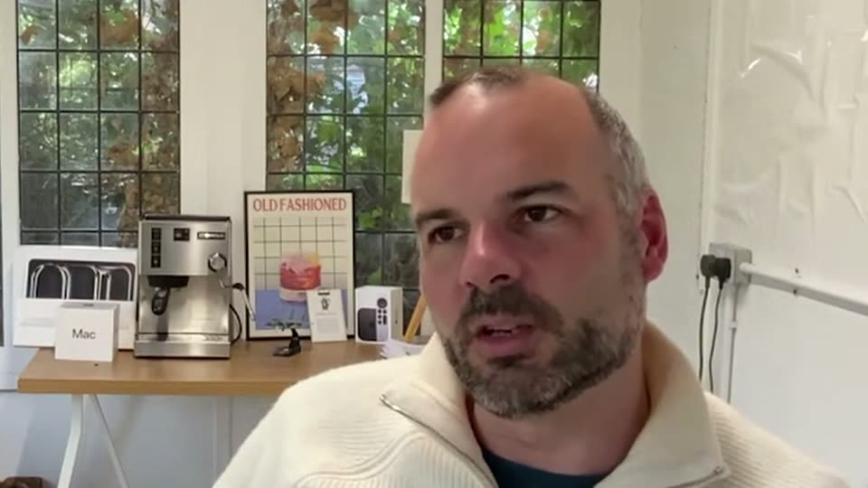

Elected Technologies, das Unternehmen aus Warwickshire, dessen System Caseworker in 16 Parlamenten weltweit im Einsatz ist, wird das siebte Unternehmen der PubliX Group und das erste außerhalb der nordischen Länder. Gründer Simon McIntyre bleibt CEO.
Die PubliX Group hat die Elected Technologies Ltd übernommen, die Caseworker entwickelt, ein System für Fallbearbeitung und Korrespondenz für gewählte Abgeordnete und den öffentlichen Sektor. Elected ist das siebte Unternehmen der Gruppe und das erste außerhalb der nordischen Länder. Die Übernahme folgt auf die Bleau A/S aus Aarhus, die am 31. August hinzukam, und PubliX hat nun Unternehmen in vier Ländern: drei in Schweden, zwei in Finnland, eines in Dänemark und eines in Großbritannien.
Elected hat seinen Sitz im Süden von Warwickshire und Teams in Adelaide, Australien, und Ottawa, Kanada. Das Hauptprodukt Caseworker führt die E-Mails, Briefe und Aufgaben einer Organisation an einem Ort zusammen, mit Nachverfolgung und einem vollständigen Bild der Kontakte zwischen Bürgerinnen und Bürgern und denen, die sie vertreten und für sie da sind. Caseworker und VoterID werden bereits von Abgeordneten in 16 Parlamenten weltweit genutzt, während CaseworkerGov dasselbe für Kommunen und Behörden leistet, unter anderem mit Unterstützung für Auskunftsanfragen nach dem Informationsfreiheitsrecht und andere Prozesse, in denen Anliegen von Bürgerinnen und Bürgern bearbeitet werden.
Die Software von Elected Technologies unterstützt viel beschäftigte Büros und Organisationen, die oft mit begrenzten Ressourcen arbeiten. Die neuen Funktionen Case Assist und AI Triage erkennen Namen und Adressen in eingehender Korrespondenz und priorisieren, fassen zusammen, kategorisieren und verschlagworten jeden Fall automatisch. Die Nutzer entscheiden weiterhin, was als Nächstes geschieht, doch die KI-Werkzeuge schlagen Schritte vor, die sich an der Arbeitsweise jedes Kunden orientieren, und ein Mensch bleibt immer eingebunden.
Für die Mitarbeitenden von Elected behält das Unternehmen seinen Namen, seinen CEO und seine Büros, und PubliX wird es nicht mit seinen bestehenden Unternehmen zusammenlegen. Die Kunden behalten ihre bestehenden Verträge, einschließlich der Bedingungen, wie und wo ihre Daten gespeichert und verarbeitet werden, und Elected bleibt eine parteipolitisch unabhängige Plattform für gewählte Abgeordnete.

„In den letzten elf Jahren ist Elected fantastisch gewachsen, aber ich habe weiterhin das Gefühl, dass noch viel mehr kommt, und ich freue mich darauf, das weiter zu führen. PubliX wird ein fantastisches Zuhause für uns sein und uns genau das geben, was wir brauchen, während wir das zweite Jahrzehnt unseres Wachstums angehen“, sagt Simon McIntyre, CEO und Gründer von Elected Technologies.
„Bei PubliX habe ich Gesprächspartner, die in derselben Lage sind wie ich. Einmal im Monat treffe ich die anderen CEOs der Gruppe, und sowohl ich als auch mein Team erhalten Zugang zu den Spezialisten und Experten der Gruppe. Ich bin wirklich überzeugt, dass wir gemeinsam mehr sein werden als die Summe unserer Teile. Wir können auf das zurückgreifen, was sie bereits gelernt haben, und unser eigenes Wissen und unsere Erfahrung zurückgeben. Letztlich ist das gut für alle unsere Kunden und bedeutet, dass sich unsere Produkte, auf die sich so viele Menschen verlassen, noch schneller verbessern können.“

Warum PubliX, in seinen eigenen Worten
Simon McIntyre Gründer & CEO, Elected Technologies
2:01
„Wir haben uns wegen der Arbeit, die seine Software leistet, für Elected entschieden. Die Anliegen, die das Büro eines Abgeordneten erreichen, sind persönlich, sie betreffen Wohnen, Gesundheit, Sozialleistungen oder Einwanderung, und Caseworker ist dafür gebaut, jedes einzelne davon im Blick zu behalten. Zwei Übernahmen seit August haben uns von zwei auf vier Länder gebracht, und wir wollen in Großbritannien weiter aufbauen, auch durch Übernahmen in Bereichen nahe an dem von Elected. Ich erwarte, dass die Nutzer von Caseworker, CaseworkerGov und VoterID den Unterschied daran merken, wie schnell sich die Produkte weiterentwickeln“, sagt Alexander Hübel, CEO der PubliX Group.
Das zentrale Team der Gruppe wird mit Elected an KI, Vertrieb und Vergabe im öffentlichen Sektor arbeiten und das Unternehmen bei seinen bestehenden Prozessen für IT-Sicherheit und Compliance unterstützen. Elected erhält außerdem sechs Schwesterunternehmen: Softwareunternehmen, die öffentliche Dienste in Schweden, Finnland und Dänemark bedienen.
Die PubliX Group sucht weiterhin gründergeführte Softwareunternehmen in Nordeuropa, die den öffentlichen Sektor bedienen, mit aktuellem Fokus auf die nordischen Länder, Großbritannien sowie Deutschland, Österreich und die Schweiz.